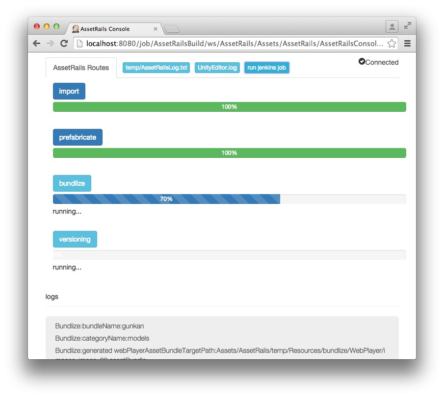
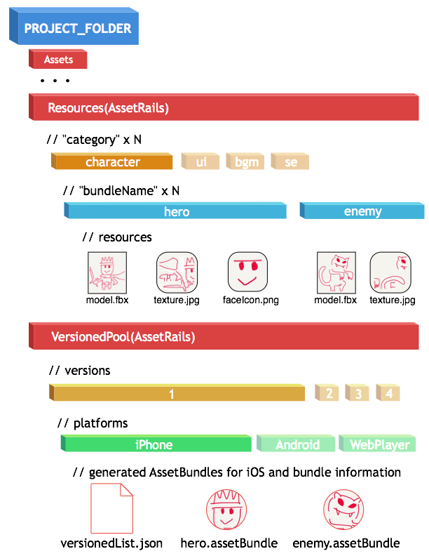

AssetRails ~素材インポートからAssetBundles作りまで、commandlineで~
概要
AssetStoreへと申請してしました。純粋な個人作では第二弾。
AssetRails
～審査中～
AssetRails-Support & Sample
https://github.com/sassembla/AssetRails-Support#assetrails-overview
使ってみたい人がいたらTwitterで@sassemblaまで連絡をくれ。
実験体になってくれ。
ニーズ
以下がやりたかった/二度とやりたくなかったので作った。
・1~2個とはいえGUIで設定するの面倒くさい
・素材をUnityにインポートするところから圧縮まで、作業のフェーズ分け
・まともさをもった再利用ビリティ
・どこで失敗したかの明示
・途中リソースの利用(このへんドキュメントに書き忘れたな?)
・追加リソースの作成自動化と、過去リソースとのマージ、デプロイ前までの整理
などで、今後盛大に自分のためになってくれると思う。
素材をUnityにインポートするところから圧縮まで、作業のフェーズ分けを行った
Unityでの各種リソースの扱いは、元からかなりラクだと思うんだけど、
反復とか量をさばいたり、またそのファイル変化の種類も多岐にわたるので、
読み込みからの処理を、大きくインポート(import)とプレファブリケート(Prefabricate, 組み立て)に分けた。
そこにさらに、AssetBundleや独自処理でのbundle化を行う行程(bundlize)を定義して、
最後にbundle後のファイルをバージョン管理する行程(versioning)を設けてある。
で、それらをcommandlineから個別に実行、反復させることができるようにした。
行程(route)とピッタリなブラウザインターフェース
たとえばimportだと、
コード的に、Unityに素材を読み込んだときに走る処理の内容とかを書きやすく、再利用しやすくした。
具体的には、クラス定義、パラメータ追加がしてあって、こんな感じに書ける。
public class SampleAssetRailsBasedImporter : AssetRails.ImporterBase {
public override void AssetRailsOnPreprocessTexture () {
// Debug.Log("Import:categoryName:" + categoryName);
// Debug.Log("Import:bundleName:" + bundleName);
// run import settings for specific category.
if (categoryName == "characters") {
UnityEditor.TextureImporter importer = assetImporter as UnityEditor.TextureImporter;
importer.textureType = UnityEditor.TextureImporterType.Image;
importer.textureFormat = TextureImporterFormat.ARGB16;
}
if (categoryName == "images") {
UnityEditor.TextureImporter importer = assetImporter as UnityEditor.TextureImporter;
importer.textureType = UnityEditor.TextureImporterType.Advanced;
importer.npotScale = TextureImporterNPOTScale.None;
importer.isReadable = true;
importer.alphaIsTransparency = true;
importer.mipmapEnabled = false;
importer.wrapMode = TextureWrapMode.Repeat;
importer.filterMode = FilterMode.Bilinear;
importer.textureFormat = TextureImporterFormat.ARGB16;
return;
}
}
}
☆categoryName, bundleNameは下の方の「前提」のズを見れば、何されてるかわかると思う。
また、どこまで動いてんだよ的な把握ができるように、Viewを持たせた。

＼\ パーセンテージでわかるの最高やぞ /／
✌('ω'✌ )三✌('ω')✌三( ✌'ω')✌"
前提
下記のようなフォルダ構造を切った。下記のような構造でファイルを置いておけば、あとはAssetRailsが適当にやってくれる。

Unity5と被ったところ
version管理まわりで、versionedList.json ってのを書き出しているが、その内容はUnity5の吐き出すあれとほぼ被った。
ただ、commandline前提で全部組まれたものは見た事無いので、たぶん俺が勝つ(嘘)。
いや～importとかから自動化する前提で組みたいんだよ。なのでGUIでなにかするのはパスだ。
エクセルとかで管理した素材フォルダさえあれば動く、っていうのが理想だと思っているので。
Script動作を排してないので、動作互換あるから、まあつかってみてよって感じ。
体験版
そのうち作る。
あ、いいサンプル思いついた。レールの内容固定でlibにしてサンプル作ればいいんだ。
ってこの手は結構使えそうな気がする。